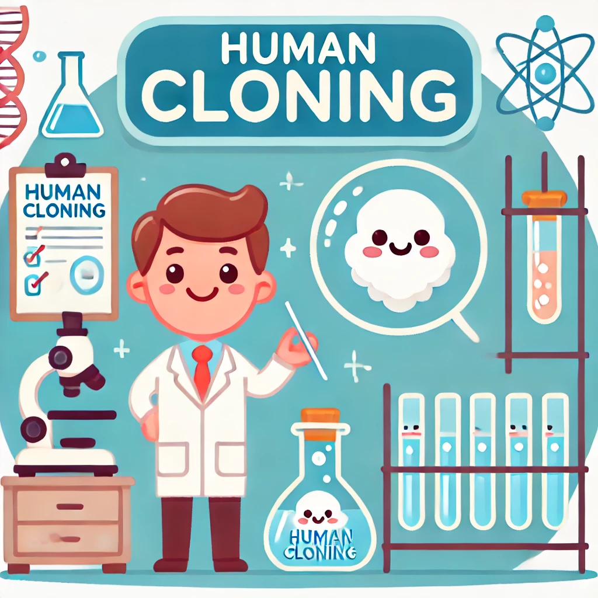

Human cloning is a fascinating and controversial topic in modern science. It involves creating a genetic replica of an organism, and it holds immense potential for medical breakthroughs, especially in areas like organ transplants, regenerative medicine, and genetic research.
On this website, you will explore the benefits, ethical concerns, and future potential of human cloning. We aim to provide a balanced perspective on this complex issue, with insights into the scientific advancements and moral questions it raises.